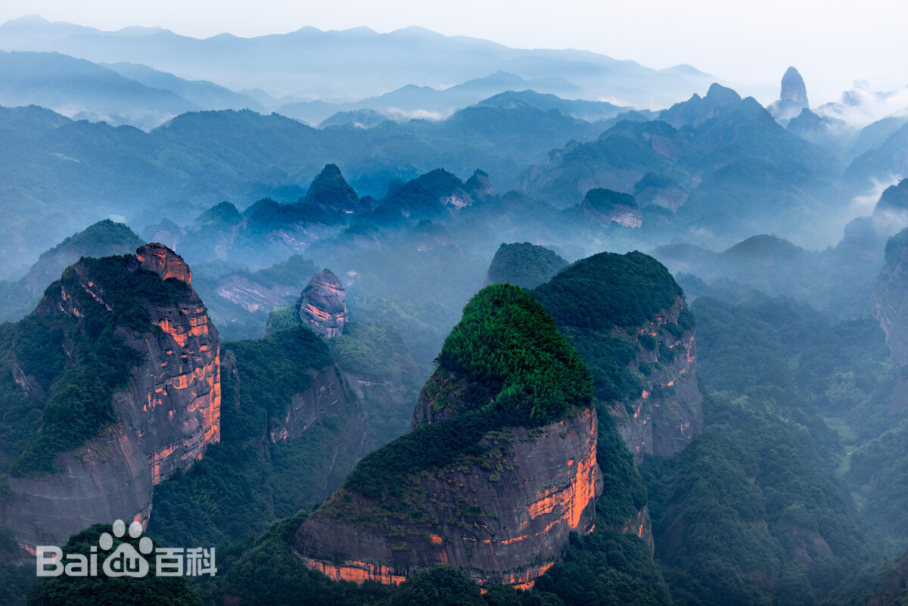
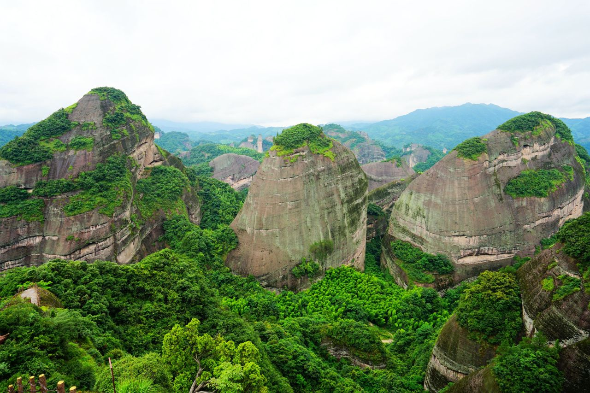
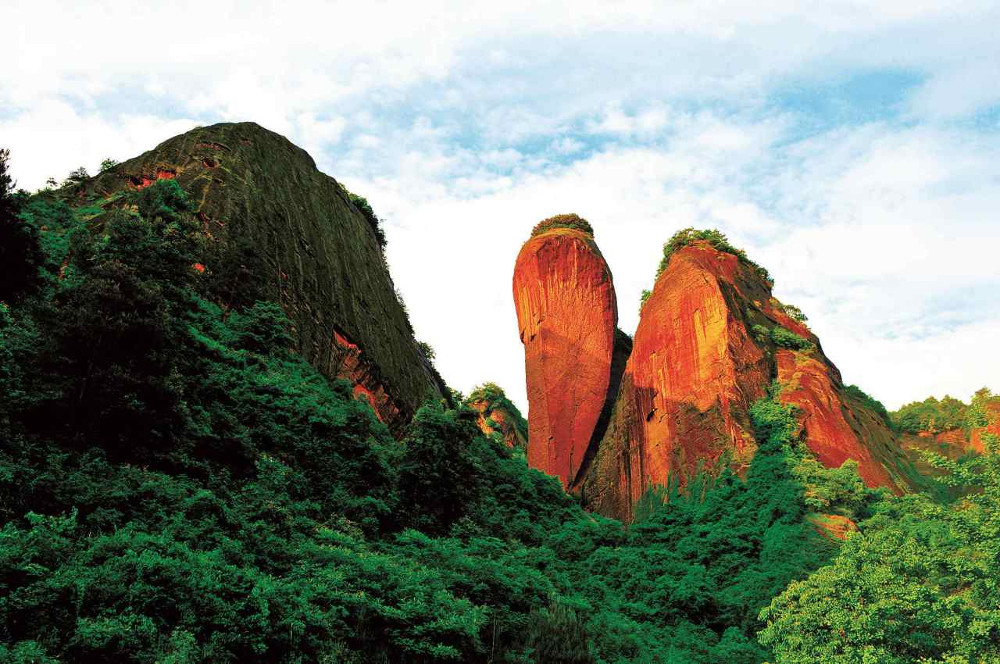
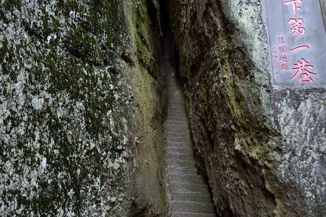
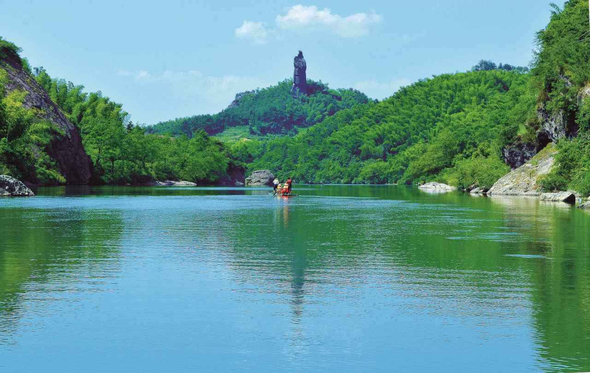
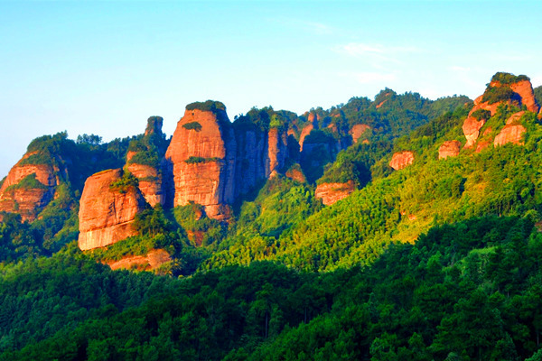
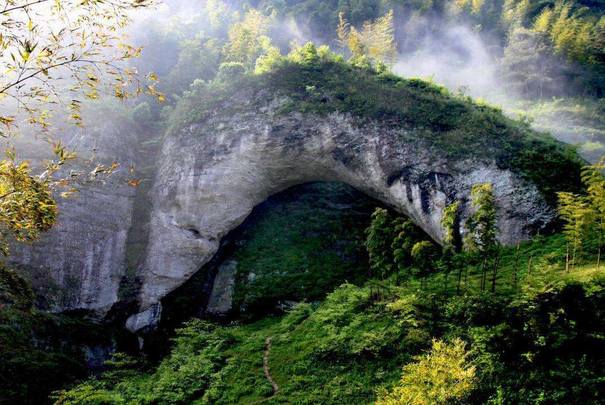

我给你们介绍一下我们最有名的崀山崀山境内地质结构奇特，山、水、林、洞要素齐全 ，是世界自然 遗产中国丹霞及湖南省南山国家公园的组成部分 ，建有湖南崀山国家地质公园、邵阳市崀山景区，有八角 寨、辣椒峰、天一巷、夫夷江、紫霞峒、天生桥六大景区。
八角寨景区位于崀山南部，因主峰平地拔起、鹤立鸡群、斜伸八个翘角而得名，景区总面积7.17平 方千米，属典型的丹霞方山，海拔816.6米，西、南、北三面绝壁，仅沿东南面有曲径可及。
辣椒峰景区是崀山丹霞象形景观密集区，是密集丹霞峰丛的代表，展示了崀山丹霞发育演化机制和 过程，面积9.62平方千米，主要景点有辣椒峰、骆驼峰、林家寨、鹅公寨、蜡烛峰、一线天、龙口朝阳等。 辣椒峰位于佛顶山上，拔地而起，绝对高度180米，上大下小，石顶周长约100米，石脚周长约40余米，呈赤 红色，远观像红辣椒，俗称“仙椒钻地”。
天一巷是典型的丹霞巷谷，长238.8米，两侧石壁高80~120余米，最宽处0.8米，最窄处仅0.33米，两 旁绝壁对峙，笔直如刀劈斧削，抬头唯见一线青天，中科院院士、中南大学一级教授、地洼学说创始人陈国 达亲笔题名为“天下第一巷”。
夫夷江发源于广西猫儿山，水面宽约100米，窄处70多米，两岸奇峰异石，主要景点有将军石、无影州、 长堤柳岸、崀虎啸天、玉石巷、团鱼石、军舰石、啄木鸟石、婆婆岩、笔架山、万古堤防、莲潭映月等，面积 24.93平方千米。
紫霞峒景区包括紫霞宫、万景槽、紫微峰、红华赤壁、乌云寨、刘华轩墓、紫霞轩、象鼻石、红瓦山等20 多个景点，面积3.80平方千米，有长达700米的红瓦山丹霞大赤壁，平均高度100米以上。
天生桥长64米，宽14米，高20米，桥面厚度5米，全桥呈圆拱形，划天而过，气势磅礴，被誉为亚洲天生第一桥。
